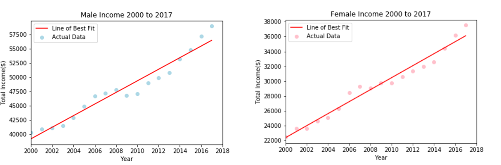
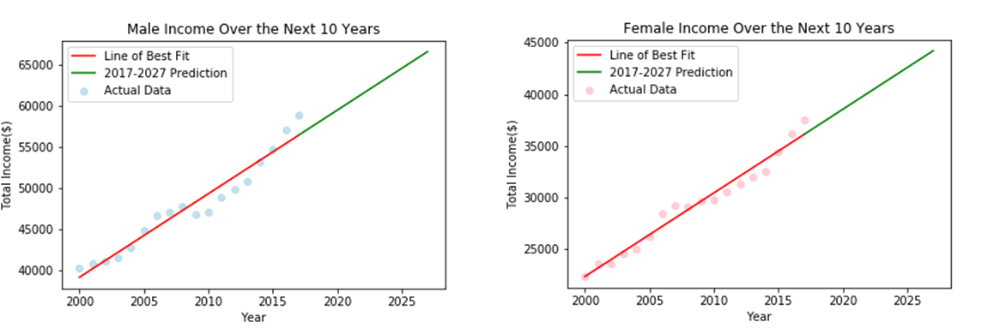
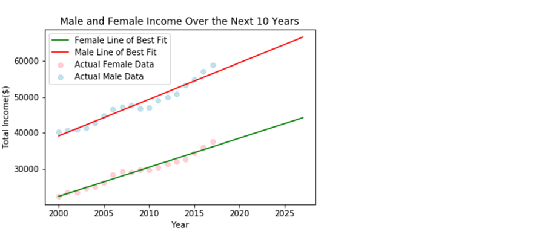
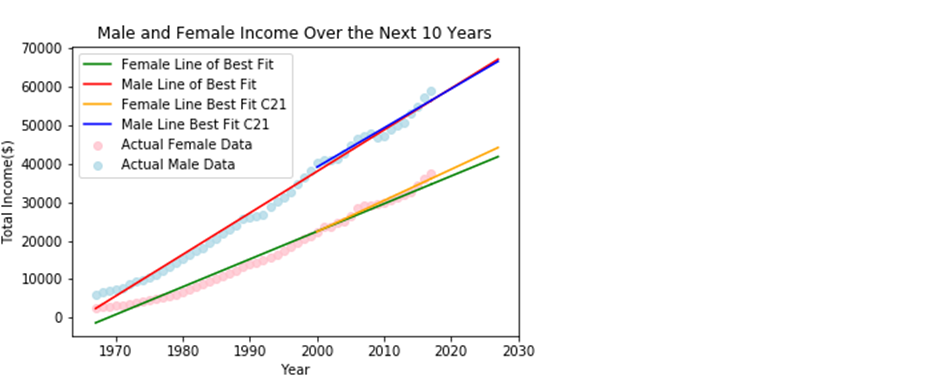

Model 3 – Fit the Model with Male and Female data from 21st Century – 2000 to 2017
Using income data from 2000 to 2017 we predicted the data to the next 10 years, 2017 to 2027 to check if there is a tendency of the wages gap between male and female decreases using more recent data.

Comparison of Incomes from 2017-2027

Comparison between the prediction from 2017 to 2027 using Third Model

Final chart comparing all the 3 models

Based on this we can see that if we consider the data from 1967 where the wages gap between male and female were higher, looks like in the future the gap will be growing. But even the gap still existing, when we consider more recent data we can see the gap is decreasing. We still have a long way to go but there is a tendency of this gap being smaller in the future.